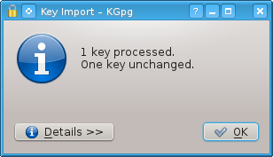
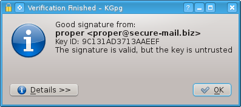
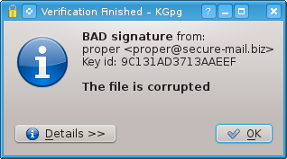
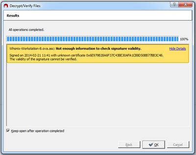
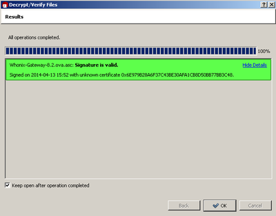

5.0 NON-QUBES-WHONIX INSTALLATION AND VERIFICATION
This section provides recommendations for a suitable host OS and Type II hypervisor (virtualizer). Instructions are also provided for installing Whonix in two configurations, namely:
- Whonix in KVM on a GNU/Linux host OS (production level security); and
- Whonix in VirtualBox on a Mac, Windows or GNU/Linux host OS (testing-experimental level security).
5.1 Recommended Host Operating System
5.1.1 Avoid Windows Hosts
Windows platforms have commodified users by adopting a business strategy similar to Google, Facebook and other large corporations - seeking to profit from the harvesting and selling of users’ personal information. In addition, Microsoft has subverted the user’s control over their own systems and implemented a host of privacy-invading features which either cannot be disabled easily, or at all. This is particularly true of Windows 10 and system updates which have been backported to earlier platforms like Windows 7, 8 and 8.1.
One small snippet of the Windows 10 ‘privacy statement’ makes their intentions clear:
http://windows.microsoft.com/en-us/windows/preview-privacy-statement
Microsoft collects information about you, your devices, applications and networks, and your use of those devices, applications and networks. Examples of data we collect include your name, email address, preferences and interests; browsing, search and file history; phone call and SMS data; device configuration and sensor data; and application usage. […] We will access, disclose and preserve personal data, including your content (such as the content of your emails, other private communications or files in private folders), when we have a good faith belief that doing so is necessary to protect our customers or enforce the terms governing the use of the services.
Other Windows ‘features’ include, but are not limited to:
- Assigning unique advertising IDs to users that enables profiling by advertisement networks;
- Remote disabling of software or hardware that Microsoft declares to be illegal or harmful;
- Enabling desktop applications to access your camera, microphone, contact lists, calendar and personal documents;
- Recording and reporting search functions;
- Recording and reporting software that is running on your computer;
- Constant, silent communication with Microsoft servers (‘phoning home’);
- Placing your data on servers - making it accessible to hackers and future requests from legal authorities or intelligence agencies; and
- Silently updating users’ machines even if they have update functions disabled.
Frankly speaking, Microsoft platforms are incompatible with anonymity and privacy. Microsoft also has a proven track record of consulting with intelligence agencies and providing information on security weaknesses before informing the public of the risk and providing patches. Logically, active collaboration places Windows users at a higher risk. Microsoft also has a track record of using weak cryptographic verification like MD5 and SHA-1 (now broken).
If you insist on using Whonix on a Windows host, ensure that Windows was installed from a legitimate source and turn off as many privacy-invading features as possible. Do not use a pirated Windows ISO found online, since it could include malware. Also avoid pirated software programs, which usually involve running unverified, possibly malicious binary cracks or key generators.
In addition, always download over https (SSL) and verify software signatures with GPG whenever possible. It is better to use renowned open source software like Firefox, Gimp, 7-zip, and LibreOffice rather than proprietary solutions which are more likely to contain malicious code.
5.1.2 GNU/Linux Hosts
For preserving anonymity, GNU/Linux is strongly recommended in preference to Windows as a suitable host OS.
For intermediate to advanced users, Debian GNU/Linux is recommended as a reasonable compromise of security and usability. Debian is a stable distribution and is used widely by a large community. Further, Debian has ties to Tor, is well-documented, boasts a secure package manager, has good kernel protection, is working on reproducible builds, and has just made package updates available via .onion sites and mirrors.
Users should only use in-repository software that is automatically GPG-signed and installed from the distributor’s reponsitories by package manager. This is far safer than downloading software from the Internet like typical Windows users.
There are of course many other potentially suitable distributions (like Fedora), but users should refer to the link below before making a final decision:
[https://www.whonix.org/wiki/Dev/Operating_System#Why_don.27t_you_use_.3Cyour_favorite_most_secure_operating_system.3E_for_Whonix.3F]
5.2 Harden the Host Operating System
Prior to choosing a virtualizer and installing Whonix, users are recommended to harden their host OS following applicable steps in the link below:
[https://www.whonix.org/wiki/Pre_Install_Advice]
In summary, users should consider:
- A dedicated computer (host OS) that only runs Whonix VMs and nothing else;
- Installing and running Whonix on an encrypted, dedicated external disk (USB, FireWire, eSATA etc.) for further security;
- Not using Whonix on a computer with shared privileges;
- Not using Whonix on the cloud, a VPS or a foreign server you do not physically control;
- Updating the BIOS, non-free drivers, or firmware and processor microcode;
- Disabling TCP timestamps;
- Disabling ICMP timestamps;
- Locking down the web interface of your home router, using a secure password and installing the latest router firmware with security patches;
- Firewall settings that deny all incoming ports;
- Disabling microphones on your computer or notebook by either unplugging them, turning them off in BIOS settings or muting them on the host;
- Disabling webcams by physically removing them, turning them off via the BIOS or covering them;
- Changing the MAC address of your wired and/or wireless network cards, particularly if using an untrusted, public network;
- Using ‘burner’ WiFi USB sticks if connecting from an intended public destination;
- Whether the set of Tor guards should be manually changed; and
- Preventing potential cross-contamination of new Whonix machines by first shutting down running instances of Whonix.
5.3 Choose a Virtualization Platform
The virtualization platform is an essential component of a secure Whonix system. A vulnerable virtualizer may provide opportunities for an attacker to break out from a VM, undoing the security by isolation features that Whonix provides. The decision to install an alternative virtualizer should not be taken lightly.
When setting up Whonix in the form of two VMs running on the same physical host, exploits targeting the VM implementation or the host can still break out of the torified Client VM and expose the IP address of the user. Any malware running on the host has full control over all VMs.
5.3.1 KVM is Preferable to VirtualBox
KVM [Kernel Virtual Machine] is an openly developed, FOSS GPL licensed hypervisor that comes with a GNU/Linux OS. It provides a familiar, intuitive and easy-to-use GUI when combined with the VirtualMachineManager front-end and is well-rated in research assessing its security merits. KVM is actively maintained by Whonix developers.
On the other hand, VirtualBox does not have a dedicated maintainer because development efforts have shifted to Qubes-Whonix. However, VirtualBox images are still being built, and grave security issues are unlikely due to Whonix’s design. The rudimentary testing of new VirtualBox images and updates on a Debian host explain the ‘testing’ staus of the GNU/Linux platform. The ‘experimental’ staus of VirtualBox images for Windows and Mac is explained by no Whonix team member currently doing testing on those platforms.
There are three other major issues with depending on VirtualBox as a virtualizer. VirtualBox developers (Oracle) recently decided to switch out the BIOS in their hypervisor with one requiring compilation by a toolchain that does not meet the definition of Free Software as per the guidelines of the Free Software Foundation. Consequently, certain restrictions are placed on the use of the software and the licence asserts specific software patents.
Secondly, the security practices of Oracle are of concern. Oracle is infamous for their lack of transparency in disclosing the details of security bugs and for discouraging full public disclosure by third parties. Security through obscurity is the corporation’s modus operandi. Zero day bugs reported to Oracle have at times gone unfixed for years.
Finally, VirtualBox contains significant functionality that is only available as a proprietary extension, such as USB and PCI passthrough and RDP connectivity. Oracle’s unfriendly track record with the free software community - examples include OpenSolaris and OpenOffice - suggest they may charge for proprietary features in the future, or simply abandon the project if they cannot monetize it to their liking.
5.3.2 QEMU and VMWare are Not Recommended
Installing Whonix inside either QEMU or VMWare is inadvisable as neither platform is currently maintained by Whonix developers.
QEMU has been deprecated in favor of KVM because the slow performance of QEMU pure emulation makes it non-practical for most of the GNU/Linux user base. Also, most computer systems support the hardware virtualization extensions required by KVM.
VMWare is rarely (officially) tested. Although it works for Windows and GNU/Linux users, it is closed source and therefore relies on security through obscurity - an approach discredited by security experts since it cannot be reasonably determined if VMWare bugs may compromise the user’s anonymity.
GNU/Linux users should default to using KVM, or VirtualBox as a second-tier choice. Windows users should default to using VirtualBox.
5.4 Install a KVM Virtualizer
5.4.1 Debian
To install KVM in Debian stable (Jessie), first update your package lists in terminal:
sudo apt-get update
Then install KVM:
sudo apt-get install qemu-kvm libvirt-bin virt-manager
5.4.2 Arch Linux
To install KVM in Arch Linux, first update your package lists:
sudo pacman -Syu
Then install KVM:
sudo pacman -S qemu libvirt virt-manager
5.4.3 Other Distributions
To install KVM in other GNU/Linux distributions, you need to have qemu-kvm and libvirt-bin. For a graphical user interface, then you will also need virt-manager. These packages can likely be installed using your distribution’s package manager.
If you get one of the following errors while later using virsh define, then you most likely need a more recent version of libvirt and KVM:
error: Failed to define domain from Whonix-Gateway_kvm-8.6.2.8.xml
error: internal error Unknown controller type 'pci
Whonix-Gateway_kvm-8.6.2.8.xml:24: element pm: Relax-NG validity error : Element domain has extra content: pm
Whonix-Gateway_kvm-8.6.2.8.xml fails to validate
Relax-NG validity error : Extra element devices in interleave
Whonix-Gateway_kvm-8.6.2.8.xml:24: element devices: Relax-NG validity error : Element domain failed to validate content
Whonix-Gateway_kvm-8.6.2.8.xml fails to validate
5.4.4 KVM Workarounds on Debian Stable (Jessie)
These workarounds solve problems affecting KVM on Debian stable (Jessie).
KVM refuses to start: on the host, a libvirt bug that conflicts with Apparmor and the VM will cause it to fail. It was fixed upstream but it will be a while until it reaches you.
To fix it run:
sudo ln -s /etc/apparmor.d/libvirt/TEMPLATE.qemu /etc/apparmor.d/libvirt/TEMPLATE.kvm
The KVM qxl package: xserver-xorg-video-qxl suffers from performance bugs caused by the Xorg surfaces feature. The graphics will lag even during mundane tasks such as scrolling down a webpage. This has been reported extensively and fixed upstream in testing. Until testing becomes stable, a workaround provided by a Whonix package is available.
In the guest, install the fix:
sudo apt-get install qxl-xorg-enhance
Whonix 13 users: To get rid of the Whonixcheck PVClock warning, upgrade the packages in the VM. This assumes you have enabled the Whonix stable repository:
sudo apt-get update && apt-get dist-upgrade
Addgroup: In order to manage VMs as regular (non-root) user, you must add that user to the libvirt and KVM group. For Debian users, assuming the simple use case - that you wish to use KVM with the user you are currently logged in as - then use the following command:*
sudo addgroup “$(whoami)” libvirt
sudo addgroup “$(whoami)” kvm
- In Ubuntu, the group names vary and it is called libvirtd instead.
5.4.5 KVM Workarounds on Other Distributions
If you are using another GNU/Linux distribution, then refer to the distribution’s manual e.g. Arch Linux’s libvirt wiki page.
Post-installation Advice
After installating KVM or adding users to groups, a reboot is required! Run the command:
sudo reboot
To ensure that KVM’s default networking is enabled and started, run the command:
virsh -c qemu:///system net-autostart default
virsh -c qemu:///system net-start default
5.5 Install a VirtualBox Virtualizer
5.5.1 Debian
To install the latest stable VirtualBox package in Debian (recommended), in a terminal run:
sudo apt-get install virtualbox linux-headers-$(uname -r)
To install VirtualBox Guest Additions in Debian:
sudo apt-get install virtualbox-guest-x11
For other GNU/Linux distributions, you can likely install the VirtualBox package and Guest Additions via your distribution’s package manager.
5.5.2 Mac OS X and Windows
To install VirtualBox, download the latest VirtualBox and Guest Additions binaries from Oracle:
https://www.virtualbox.org/wiki/Downloads
At the time of writing these were:
VirtualBox 5.1.2 for Windows hosts x86/amd64
VirtualBox 5.1.2 for OS X hosts amd64
And:
VirtualBox 5.1.2 Oracle VM VirtualBox Extension Pack (all supported platforms)
If you are already using an earlier addition of VirtualBox (4.3.x or 5.0.x), then you can download extension packs instead. Compare the SHA256 checksums file to provided (limited) verification of file integrity. Do not rely on the MD5 checksums.
5.5.3 Installing the Latest VirtualBox Version (Debian)
At the time of writing, the Debian stable version of VirtualBox is 4.3.x, while the latest major release of VirtualBox (from Debian Stretch) is 5.0.x.
If you are sure you wish to install the latest VirtualBox version for newer features, then you are recommended to either install VirtualBox from Debian Testing via Backports or install from the Oracle depository. This is preferable to downloading, verifying and installing binaries manually.
To install from Debian Testing via Backports:
a) Open /etc/apt/sources.list.d/backports.list in an editor with root rights.
If you are using a graphical Whonix environent, run:
kdesudo kwrite /etc/apt/sources.list.d/backports.list
If you are using a terminal-only Whonix environment, run:
sudo nano /etc/apt/sources.list.d/backports.list
b) Add the following line:
deb http://http.debian.net/debian jessie-backports main contrib
(Change “jessie” to the current name of your stable distribution).
c) Update the package lists and install VirtualBox.
sudo apt-get update
sudo apt-get -t jessie-backports install virtualbox
d) Install VirtualBox Guest Additions.
sudo apt-get -t jessie-backports install virtualbox-guest-x11
If you wish to install VirtualBox from the Oracle repository instead:
a) Retrieve the latest Oracle VirtualBox package information.
Open /etc/apt/sources.list.d/oracle.list in an editor with root rights.
b) Edit your apt sources list.
If you are using a graphical Whonix environment, run:
kdesudo kwrite /etc/apt/sources.list.d/oracle.list
If you are using a terminal-only Whonix, run:
sudo nano /etc/apt/sources.list.d/oracle.list
c) Add the following line:
deb http://download.virtualbox.org/virtualbox/debian jessie contrib
(Change “jessie” to the current name of your stable distribution).
d) Add Oracle’s signing key to apt-get keyring.
curl --tlsv1.2 --proto =https https://www.virtualbox.org/download/oracle_vbox_2016.asc | sudo apt-key add -
e) Check the signing key’s fingerprint.
sudo apt-key adv --fingerprint B9F8D658297AF3EFC18D5CDFA2F683C52980AECF
The output should read:
Key fingerprint = B9F8 D658 297A F3EF C18D 5CDF A2F6 83C5 2980 AECF
uid Oracle Corporation (VirtualBox archive signing key) info@virtualbox.org
f) Install VirtualBox.
sudo apt-get update
sudo apt-get install virtualbox-5.0
Note: The VirtualBox Guest Additions ISO is included in the package. To install, mount the ISO in a guest VM following these instructions:
https://www.virtualbox.org/manual/ch04.html#idp46640732075968
5.6 Download Whonix Images
At the time of writing, Whonix 13 was the latest version available. Always first check the Whonix download page for the latest stable release:
[https://www.whonix.org/wiki/Download]
5.6.1 KVM
GNU/Linux users need to download both Whonix Gateway and Workstation VM (.xz) images and PGP signatures (.xz.asc) for later verification of the files. To anonymize the download, use the Tor Browser bundle:
Whonix-Gateway image (1.7 GB)
https://www.whonix.org/download/13.0.0.1.1/Whonix-Gateway-13.0.0.1.1.libvirt.xz
https://www.whonix.org/download/13.0.0.1.1/Whonix-Gateway-13.0.0.1.1.libvirt.xz.asc
Whonix-Workstation image (2.0 GB)
https://www.whonix.org/download/13.0.0.1.1/Whonix-Workstation-13.0.0.1.1.libvirt.xz
https://www.whonix.org/download/13.0.0.1.1/Whonix-Workstation-13.0.0.1.1.libvirt.xz.asc
5.6.2 VirtualBox
For Windows, Mac OS X and GNU/Linux OS, you need to download both Whonix Gateway and Workstation VM (.ova) images and PGP signatures (.ova.asc) for later verification of the files. To anonymize the download, use the Tor Browser bundle:
Whonix-Gateway image (1.7 GB)
https://www.whonix.org/download/13.0.0.1.1/Whonix-Gateway-13.0.0.1.1.ova
https://www.whonix.org/download/13.0.0.1.1/Whonix-Gateway-13.0.0.1.1.ova.asc
Whonix-Workstation image (2.0 GB)
https://www.whonix.org/download/13.0.0.1.1/Whonix-Workstation-13.0.0.1.1.ova
https://www.whonix.org/download/13.0.0.1.1/Whonix-Workstation-13.0.0.1.1.ova.asc
5.7 Download the Whonix Signing Key
Note: This section is for GNU/Linux users in the first instance.
Mac OS X and Windows users should refer to section 5.8 first, and download a compatible GnuPG program (GPGTools for Mac OS X; Gpg4win for Windows) before following instructions to:
- Download the Whonix signing key;
- Check the key’s fingerprints are valid;
- Import the signing key; and
- Cryptographically verify the Whonix VM images.
a) (Optional) Have GnuPG initialize your user data folder.
If you are new to gnupg or have not already done this, it will fix eventual “gpg: WARNING: unsafe ownership” warnings. Run the following command in terminal:
gpg --fingerprint
Then set warning free permissions:
chmod --recursive og-rwx ~/.gnupg
b) Download Patrick Schleizer’s (adrelanos’) OpenPGP key from:
http://kkkkkkkkkk63ava6.onion/patrick.asc
Or
https://www.whonix.org/patrick.asc
Note: All Whonix releases are signed with the same key. Using these steps, you will not have to verify the key every time, but you will still need to verify the signatures of Whonix images every time you download a new release.
c) Store the key as ~/patrick.asc
d) Check the key’s fingerprints before importing it:
gpg --with-fingerprint patrick.asc
e) Verify the fingerprint shows the following output:
pub 4096R/2EEACCDA 2014-01-16 Patrick Schleizer adrelanos@riseup.net
Key fingerprint = 916B 8D99 C38E AF5E 8ADC 7A2A 8D66 066A 2EEA CCDA
sub 4096R/CE998547 2014-01-16 [expires: 2021-04-17]
sub 4096R/119B3FD6 2014-01-16 [expires: 2021-04-17]
sub 4096R/77BB3C48 2014-01-16 [expires: 2021-04-17]
f) Import the key.
gpg --import patrick.asc
The following output tells you the key was successfully imported:
gpg: key 2EEACCDA: public key “Patrick Schleizer adrelanos@riseup.net” imported
gpg: Total number processed: 1
gpg: imported: 1 (RSA: 1)
If you have already imported the Whonix signing key in the past, the output should state the key was not changed:
gpg: key 2EEACCDA: “Patrick Schleizer adrelanos@riseup.net” not changed
gpg: Total number processed: 1
gpg: unchanged: 1
If you are shown the following message at the end of the output:
gpg: no ultimately trusted keys found
Analyse the other messages as usual. This extra message doesn’t relate to the Whonix signing key that you just downloaded. Usually, this output means you haven’t yet created an OpenPGP key for yourself, which is of no importance to verifying the VM images.
g) For better security, advanced users can check the Web of Trust following these steps:
[https://www.whonix.org/wiki/Whonix_Signing_Key#Web_of_Trust]
5.8 Verify Whonix Images
It is critical to check the integrity of the VM images you downloaded to make sure no man-in-the-middle attack or file corruption occured. All Whonix VM images are cryptographically signed using OpenPGP by Whonix lead developer, Patrick Schleizer.
Warning: If verification fails, do NOT continue! If you ignore this warning, then you risk using infected or corrupted files.
5.8.1 KGpg in GNU/Linux
KGpg is a simple, free, open source KDE frontend for gpg.
a) To install KGpg in Debian, in a terminal run the commands:
sudo apt-get update
sudo apt-get install kgpg
b) Start KGpg and open patrick.asc that you downloaded and imported at step 5.7.
When you start KGpg, a system tray icon will appear. A left mouse button click will open the Key Manager window, while a right mouse button click will open a menu allowing quick access to some important features.
Having already imported the key, you should see the following message:
Figure 14: KGpg - Key Already Imported

If you did not already download and import the key, you should see the following message:
Figure 15: KGpg - New Key Imported
c) Verify the VM images against the cryptographic signatures.
The cryptographic signatures (.asc) must be in the same folder as the VM images you wish to verify (.ova for VirtualBox, .xz for KVM).
Start kgpg, and go to:
KGpg -> File -> Open Editor -> Signature -> Verify Signature… -> Choose the downloaded cryptographic signature (.asc)
This process can take a few minutes and there is no progress meter. Repeat this procedure for both the Whonix-Gateway and Whonix-Workstation images.
If the virtual machine image is correct you will get a notification telling you that the signature is good:
Figure 16: KGpg Good Signature

Note: The e-mail has changed to adrelanos at riseup do net, but this doesn’t change anything, since the key fingerprint remains the same as step 5.7.e.
d) Click on the ‘Details’ button to check the gpg signature for both files.
The first line includes the signature creation timestamp and it should make sense. For example, if you previously saw a signature from 2016 and you are now seeing a signature from 2015, then you could be target of a rollback (downgrade) or indefinite freeze attack.
An example signature creation timestamp is below:
[GNUPG:] VALIDSIG 6E979B28A6F37C43BE30AFA1CB8D50BB77BB3C48 2015-01-19
e) Click on the ‘Details’ button to check the file name has not been tampered with.
Note: OpenPGP signatures sign files, not file names. Beginning from Whonix version 9.6, by convention the file@name OpenPGP notation includes the file name.
An example is provided below:
NOTATION_NAME file@name [GNUPG:] NOTATION_DATA Whonix-Gateway-9.6.ova
f) Do not install files with bad signatures!
If the VM image is not correct, then you will get a notification telling you that the signature is bad:
Figure 17: KGpg Bad Signature

(Again, the e-mail has changed to adrelanos at riseup do net, but this doesn’t change anything, since the key fingerprint remains the same as step 5.7.e.)
5.8.2 Terminal in GNU/Linux
a) Ensure you have GnuPG installed.
GnuPG is the common OpenPGP implementation for Linux. It is installed by default under Debian, Ubuntu, Whonix and many other distributions.
b) Ensure the VM images and cryptographic signatures are in the same folder.
The cryptographic signatures (.asc) must be in the same folder as the VM images you wish to verify (.ova for VirtualBox, .xz for KVM).
c) Cryptographically verify the Whonix-Gateway image.
This process can take a few minutes and there is no progress meter.
cd [the directory in which you downloaded the .ova or .xz and the .asc]
Then, start the cryptographic verification of the Whonix-Gateway image:
gpg --verify-options show-notations --verify Whonix-Gateway-.ova.asc Whonix-Gateway-.ova
Or
gpg --verify-options show-notations --verify Whonix-Gateway-.xz.asc Whonix-Gateway-.xz
d) Cryptographically verify the Whonix-Workstation image.
cd [the directory in which you downloaded the .ova or .xz and the .asc]
Then, start the cryptographic verification of the Whonix-Workstation image:
gpg --verify-options show-notations --verify Whonix-Workstation-.ova.asc Whonix-Workstation-.ova
Or
gpg --verify-options show-notations --verify Whonix-Workstation-.xz.asc Whonix-Workstation-.xz
e) Confirm the signatures are good for both the Whonix-Gateway and Whonix-Workstation.
If the VM images are correct, the output of the last step will show a good signature. For example:
gpg: Signature made Mon 19 Jan 2015 11:45:41 PM CET using RSA key ID 77BB3C48
gpg: Good signature from “Patrick Schleizer adrelanos@riseup.net” [unknown]
gpg: Signature notation: issuer-fpr@notations.openpgp.fifthhorseman.net=6E979B28A6F37C43BE30AFA1CB8D50BB77BB3C48
gpg: Signature notation: file@name=Whonix-Gateway-9.6.ova
gpg: WARNING: This key is not certified with a trusted signature!
gpg: There is no indication that the signature belongs to the owner.
Primary key fingerprint: 916B 8D99 C38E AF5E 8ADC 7A2A 8D66 066A 2EEA CCDA
Subkey fingerprint: 6E97 9B28 A6F3 7C43 BE30 AFA1 CB8D 50BB 77BB 3C48
This might be followed by a warning saying:
gpg: WARNING: This key is not certified with a trusted signature!
gpg: There is no indication that the signature belongs to the owner.
This last warning doesn’t alter the validity of the (good) signature according to the Whonix signing key you downloaded. It only refers to the trust level you place on the Whonix signing key and the web of trust. Removing this warning would require you to personally sign the Whonix key with your own.
f) Check the gpg signature timestamp makes sense.
If you previously saw a signature from in 2016 and are now seeing a signature from 2015, then you could be target of a rollback (downgrade) or indefinite freeze attack.
The first line includes the signature creation timestamp. In this example:
gpg: Signature made Mon 19 Jan 2015 11:45:41 PM CET using RSA key ID 77BB3C48
g) Check the file name has not been tampered with.
Note: OpenPGP signatures sign files, not file names. Beginning from Whonix version 9.6, by convention the file@name OpenPGP notation includes the file name.
An example is provided below:
gpg: Signature notation: file@name=Whonix-Gateway-9.6.ova
h) Do not install files with bad signatures!
If the VM image is not correct you will get a notification telling you that the signature is bad:
gpg: Signature made Sun Nov 25 21:48:54 2012 UTC
gpg: using RSA key 77BB3C48
gpg: BAD signature from “Patrick Schleizer adrelanos@riseup.net”
5.8.3 Gpg4win in Windows
GnuPG, a common free software implementation of OpenPGP has versions and graphical frontends for Windows.
Note: Due to the weaknesses in Kleopatra, advanced users may instead prefer to verify VM images using the command line instructions outlined in:
a) Download Gpg4win.
https://www.gpg4win.org/
If you wish to download a GnuPG version for Windows securely, then you are advised to follow these directions:
https://lists.torproject.org/pipermail/tor-talk/2013-August/029256.html
b) Install Gpg4win.
The “Gpg4win-Compendium” is the end-user documentation for Gpg4win and has almost 200 pages on how to install and use the software:
http://wald.intevation.org/frs/download.php/1385/gpg4win-compendium-en-3.0.0.pdf
https://www.gpg4win.org/doc/en/gpg4win-compendium.html
Installation instructions are specifically found in Chapter 6:
https://www.gpg4win.org/doc/en/gpg4win-compendium_11.html
c) Download Patrick Schleizer’s (adrelanos’) OpenPGP key from:
http://kkkkkkkkkk63ava6.onion/patrick.asc
Or
https://www.whonix.org/patrick.asc
d) Import the Whonix signing key.
Follow the directions of Chapter 10 of the compendium:
https://www.gpg4win.org/doc/en/gpg4win-compendium_15.html
e) Inspect the signing key with Kleopatra.
Follow the directions of Chapter 11 of the compendium:
https://www.gpg4win.org/doc/en/gpg4win-compendium_16.html
Advanced users may wish to use the gpg command line instead, since this process is cumbersome. As long as the signing key is only listed under “other certificates” in Kleopatra, you will get the message “Not enough information to check signature validity”.
The signing key needs to be listed under “trusted certificates”. To achieve that, you need to create your own OpenPGP key first:
Kleopatra -> File -> New Certificate.
To sign Whonix’s singing key:
Right click on it and click “Certify Certificate”. Creating a local signature suffices.
f) Check the cryptographic signature of the VM image you want to certify.
Follow the directions in Chapter 18 of the compendium to check the integrity of the VM image and VirtualBox signature you downloaded in section 5.6.2:
https://www.gpg4win.org/doc/en/gpg4win-compendium_24.html#id4
If you see the error message “Not enough information to check signature validity” as shown below:
Figure 18: Kleopatra Error Message

Then you either did not import Whonix’s signing key or you did not sign Whonix’s signing key with your own key.
If you see:
Signature valid.
Signed on 2014-04-13 06:52 with unknown certificate
0x63979B28A6F37C43BE30AFA1CB8D50BB77BB3C48
Figure 19: Kleopatra Valid Signature and Unknown Certificate

Then this is a bug in Kleopatra which they have not fixed since 2011.
g) Check the gpg signature timestamp makes sense.
If you previously saw a signature from in 2016 and are now seeing a signature from 2015, then you could be target of a rollback (downgrade) or indefinite freeze attack.
h) Check the file name has not been tampered with.
Note: OpenPGP signatures sign files, not file names. Beginning from Whonix version 9.6, by convention the file@name OpenPGP notation includes the file name.
5.8.4 GPGTools in Mac OS X
GnuPG, a common free software implementation of OpenPGP has versions and graphical frontends for Mac OS X.
The website has detailed documentation on how to install and use the software suite.
a) Download GPGTools for Mac OS X:
https://gpgtools.org/
b) Install GPGTools.
After installing GPGTools, you should be now be able to follow the GNU/Linux command line instructions in this guide.
c) Open the command line.
Navigate to your Applications folder -> open Utilities -> double click on Terminal.
c) Follow the instructions in section 5.7 to download and check the fingerprints of the Whonix signing key before importing it.
e) Follow the instructions in section 5.8.2 to cryptographically verify the Whonix VM images.
5.9 Install (Import) Whonix Images
The section outlines how to install (import) the verified Whonix VM images into the chosen virtualizer.
5.9.1 Install Whonix in KVM
a) Decompress the archived Whonix-Gateway and Whonix-Workstation archives.
Use tar to decompress the archive:
tar -xvf Whonix-Gateway*.libvirt.xz
tar -xvf Whonix-Workstation*.libvirt.xz
Note: Do not use unxz!
b) Import the Whonix VM Templates.
The supplied XML files serve as a description for libvirt, which describe the properties and networking of a Whonix machine.
First, the Whonix-Gateway is defined:
virsh -c qemu:///system define Whonix-Gateway*.xml
Second, the Whonix isolated internal network is defined. This XML is also in the same folder as the Whonix Gateway:
virsh -c qemu:///system net-define Whonix_network*.xml
Note: if the definition of the Whonix internal network fails because the network bridge “virbr1” already exists, the Whonix_network*.xml file must be edited. Change the name to one that doesnt exist e.g. “virbr2”. You can list all existing bridge adapters with “sudo brctl show”.
virsh -c qemu:///system net-autostart Whonix
virsh -c qemu:///system net-start Whonix
Lastly, the Whonix-Workstation is defined:
virsh -c qemu:///system define Whonix-Workstation*.xml
c) Move the Whonix image files.
The XML files are configured to point to the default storage location: /var/lib/libvirt/images
This step will move the images there in order for the machines to boot.
Note: It is highly recommended you use this default path for storing the images to avoid any conflicts with AppArmor or SELinux, which will prevent the machines from booting.
It is best to move the image files, instead of copying them:
sudo mv Whonix-Gateway*.qcow2 /var/lib/libvirt/images/Whonix-Gateway.qcow2
sudo mv Whonix-Workstation*.qcow2 /var/lib/libvirt/images/Whonix-Workstation.qcow2
Whonix disk images are known as ‘sparse files’, meaning they expand when filled rather than allocating their entire size (100 GB outright). Special commands are needed when copying them to ensure they don’t lose this property, leading them to occupy all the actual space.
To copy to a privileged system location, higher privileges (sudo) is required:
sudo cp --sparse=always Whonix-Gateway*.qcow2 /var/lib/libvirt/images/Whonix-Gateway.qcow2
sudo cp --sparse=always Whonix-Workstation*.qcow2 /var/lib/libvirt/images/Whonix-Workstation.qcow2
d) Cleanup after importing Whonix.
Post-installation, the archives (.libvirt.xz files) and the temporarily extracted folders can be deleted or moved to a custom location. This helps avoid conflicts and confusion should you later download a new Whonix version.
To delete them:
rm Whonix-Gateway*.libvirt.xz
rm Whonix-Workstation*.libvirt.xz
rm -r Whonix-Gateway*
rm -r Whonix-Workstation*
rm -r Whonix_network*
5.9.2 Install Whonix in VirtualBox
a) Start VirtualBox.
Figure 20: VirtualBox Welcome Page
b) Select ‘Import Applicance’:
File -> Import Appliance…
Figure 21: Import Appliance Into VirtualBox
c) Navigate and select the Whonix-Gateway image (.ova) and press ‘Next’:
Figure 22: Select the Whonix-Gateway Image
d) Do NOT change any settings! Just click on ‘Import’:
Figure 23: Select the Import Button
e) Select ‘Agree’ to the license agreement:
Figure 24: Select Agree with the License
f) Wait until the Whonix-Gateway image has been imported.
Figure 25: Importing of VirtualBox Image
g) Repeat steps a-f with the Whonix-Workstation image (.ova)
When finished, you will now see both the Whonix-Gateway and Whonix-Workstation VMs in a powered off state in VirtualBox.
Figure 26: Successfully Imported Whonix Images

{kind=link}
{kind=link}
{kind=link}
{kind=link}
{kind=link}
{kind=link}
{kind=link}
{kind=link}
{kind=link}
{kind=link}
{kind=link}
{kind=link}
{kind=link}
{kind=link}
{kind=link}
{kind=link}